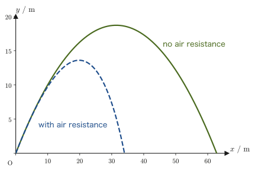
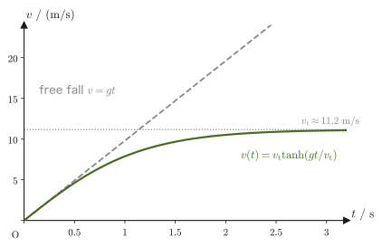

Chapter 5Projectile Motion and Circular Motion — Air Resistance and Centripetal Acceleration
When a ball is thrown obliquely upward, it falls back to the ground along a parabola. You should have learned this “projectile motion” in high school physics as the formulas $x=v_0t\cos\theta$ and $y=v_0t\sin\theta-\frac12gt^2$, obtained by treating the horizontal and vertical directions separately. In the preceding chapters we learned the fundamental law of mechanics (Newton's equation of motion) and how to describe curvilinear motion component by component, so in this chapter we finally derive those formulas themselves from the equation of motion $m\bm{a}=\bm{F}$.
In fact, the high school formulas are merely the answer for the idealized case in which air resistance is ignored completely. In reality, air resistance (drag) acts on balls and raindrops alike, and its magnitude depends on the speed of the object. In this chapter we solve, for the first time as a full-fledged differential equation, the equation of motion with air resistance proportional to the velocity, and we confirm mathematically the phenomenon that “after a sufficiently long time has passed since the throw, the object keeps falling at a constant speed (the terminal velocity).” We also find the terminal velocity for resistance proportional to the square of the velocity (a model closer to reality for objects moving at high speed).
Finally, we see that the centripetal acceleration $v^2/r=r\omega^2$ of uniform circular motion, which you memorized as a formula in high school physics, can also be derived simply by differentiating the position vector twice.
- Integrate the equation of motion $m\bm{a}=[0,-mg]$ of projectile motion without air resistance twice, and derive the expressions for the velocity and position, the height of the highest point, and the horizontal range $R=v_0^2\sin2\theta/g$
- Solve the equation of motion with air resistance proportional to the velocity, as first-order linear differential equations for each component, by separation of variables (University Mathematics, AD 02, Chapter 33), and obtain the expressions for the velocity and position and the concept of the terminal velocity
- As an advanced topic, solve the equation of motion for air resistance proportional to the square of the velocity, which acts on an object moving at high speed, and find the terminal velocity
- Differentiate the position vector $\bm{r}(t)=[r\cos\omega t,\,r\sin\omega t]$ of uniform circular motion twice to derive the centripetal acceleration $\bm{a}=-\omega^2\bm{r}$, and check that its magnitude agrees with the high school physics formula $v^2/r=r\omega^2$. Understand the difference between the centripetal force and the centrifugal force, which is an apparent force
Source notes: Yasuhide Mochizuki, Physics Notes: Mechanics, pp. 13–15.
5.1 Projectile Motion without Air Resistance — Trajectory, Highest Point, and Horizontal Range
Consider a ball of mass $m\ [\mathrm{kg}]$ (treated as a particle, or point mass, whose size can be neglected) thrown with speed $v_0\ [\mathrm{m/s}]$ in a direction inclined at an angle $\theta$ from the horizontal (Figure 5.1). We take the point of release as the origin, the horizontal direction as the $x$ axis, and the vertically upward direction as the $y$ axis. In components, the initial velocity vector is written
$$ \bm{v}(0)=[\,v_0\cos\theta,\ v_0\sin\theta\,] $$Here $\bm{v}=[v_x,v_y]$ is a notation that lists the $x$ component and the $y$ component side by side; it is the boldface vector notation introduced in Chapter 1. As in Chapter 1, we also write the position vector as $\bm{r}(t)=[x(t),y(t)]$, so that the velocity is $\bm{v}=\dot{\bm{r}}$ and the acceleration is $\bm{a}=\dot{\bm{v}}=\ddot{\bm{r}}$. If we neglect air resistance, the only force acting on the ball is gravity $-mg\,\bm{e}_y$ ($\bm{e}_y$ is the unit vector in the $y$ direction and $g\ [\mathrm{m/s^2}]$ is the gravitational acceleration), so the equation of motion $m\bm{a}=\bm{F}$ (Chapter 2) reads, component by component,
\begin{equation} m\bm{a}=[\,0,\ -mg\,] \label{eq:5-proj-eom} \end{equation}Dividing both sides by $m$, we find that the acceleration is
\begin{equation} \bm{a}=[\,0,\ -g\,] \label{eq:5-proj-a} \end{equation}This is a constant vector that does not depend on the time $t$. It is exactly what you learned in high school physics, namely that “no force acts in the horizontal direction, so the motion is uniform rectilinear motion there, while in the vertical direction the motion has constant acceleration equal to the gravitational acceleration $g$”; Eq. \eqref{eq:5-proj-a} expresses the fact that the $x$ component of the acceleration is identically zero and the $y$ component is identically $-g$.
Derivation: Velocity and position in projectile motion
The acceleration $\bm{a}(t)=[0,-g]$ (Eq. \eqref{eq:5-proj-a}) is the right-hand side of $\dot{\bm{v}}=\bm{a}$, the time derivative of the velocity, so taking the indefinite integral of both sides with respect to time gives the velocity:
\begin{equation} \bm{v}(t)=\int\bm{a}\,\dd t=[\,C_1,\ -gt+C_2\,] \label{eq:5-proj-v-int} \end{equation}(The $x$ component is $\int 0\,\dd t=C_1$ and the $y$ component is $\int(-g)\,\dd t=-gt+C_2$. Here $C_1,C_2$ are constants of integration; one appears each time we integrate once.) The constants of integration are determined from the initial conditions. The velocity at time $t=0$ is just the initial velocity at the moment of the throw, so $\bm{v}(0)=[v_0\cos\theta,\,v_0\sin\theta]$. Substituting $t=0$ into Eq. \eqref{eq:5-proj-v-int} gives $\bm{v}(0)=[C_1,\,C_2]$, and comparing the two, we find
$$ C_1=v_0\cos\theta,\qquad C_2=v_0\sin\theta $$Therefore the velocity as a function of the time $t$ can be written
\begin{equation} \bm{v}(t)=[\,v_0\cos\theta,\ -gt+v_0\sin\theta\,] \label{eq:5-proj-v} \end{equation}Next, the position vector $\bm{r}(t)$ is obtained by integrating the velocity with respect to time, $\dot{\bm{r}}=\bm{v}$. Integrating Eq. \eqref{eq:5-proj-v} once more with respect to $t$ gives
\begin{equation} \bm{r}(t)=\int\bm{v}\,\dd t=\Big[\,v_0t\cos\theta+C_3,\ -\frac12gt^2+v_0t\sin\theta+C_4\,\Big] \label{eq:5-proj-x-int} \end{equation}(The $x$ component is $\int v_0\cos\theta\,\dd t=v_0t\cos\theta+C_3$ and the $y$ component is $\int(-gt+v_0\sin\theta)\,\dd t=-\frac12gt^2+v_0t\sin\theta+C_4$. Here too we denote the constants of integration by new symbols $C_3,C_4$—they are separate constants, unrelated to $C_1,C_2$ in Eq. \eqref{eq:5-proj-v-int}.) Since we chose the origin to be the point of release, the initial condition is $\bm{r}(0)=[0,0]$. Substituting $t=0$ into Eq. \eqref{eq:5-proj-x-int} gives $\bm{r}(0)=[C_3,C_4]$, so we find
$$ C_3=0,\qquad C_4=0 $$Hence the position is
\begin{equation} \bm{r}(t)=\Big[\,v_0t\cos\theta,\ -\frac12gt^2+v_0t\sin\theta\,\Big] \label{eq:5-proj-x} \end{equation}∎
Formula 5.1: Trajectory of projectile motion without air resistance
For a particle thrown with initial speed $v_0$ at an angle $\theta$ from the horizontal (no air resistance, with the vertically upward direction taken as the positive $y$ axis), the velocity and position at time $t$ are
\begin{equation} \bm{v}(t)=[\,v_0\cos\theta,\ v_0\sin\theta-gt\,],\qquad \bm{r}(t)=\Big[\,v_0t\cos\theta,\ v_0t\sin\theta-\frac12gt^2\,\Big] \end{equation}This agrees exactly with the formulas you memorized in high school physics: “uniform motion with speed $v_0\cos\theta$ in the horizontal direction, and motion with constant acceleration (acceleration $-g$) with initial speed $v_0\sin\theta$ in the vertical direction.” Here we have actually derived them from the equation of motion.
Let us eliminate the time $t$ from Eq. \eqref{eq:5-proj-x} and express the trajectory in the form $y=y(x)$ (the equation of a curve that does not involve time). Solving the $x$ component $x=v_0t\cos\theta$ for $t$ gives $t=x/(v_0\cos\theta)$, and substituting this into the $y$ component $y=v_0t\sin\theta-\frac12gt^2$ gives
\begin{equation} y=v_0\sin\theta\cdot\frac{x}{v_0\cos\theta}-\frac12g\left(\frac{x}{v_0\cos\theta}\right)^2 =x\tan\theta-\frac{g}{2v_0^2\cos^2\theta}\,x^2 \label{eq:5-proj-orbit} \end{equation}(we used $\sin\theta/\cos\theta=\tan\theta$). This is a quadratic function of $x$—a parabola. This is the origin of the Japanese name for “projectile motion.” [In Japanese, projectile motion is hōbutsu undō and a parabola is hōbutsu-sen, literally “the line of a thrown object”; the two names share the root hōbutsu, “thrown object.”]
Derivation: Height of the highest point and horizontal range
The highest point is the moment at which the ball turns from rising to falling, that is, the time at which the vertical velocity is exactly zero. Setting the $y$ component $v_y(t)=v_0\sin\theta-gt$ of Eq. \eqref{eq:5-proj-v} equal to zero gives the time $t_{\text{top}}$ at which the highest point is reached:
$$ v_0\sin\theta-gt_{\text{top}}=0 \qquad\therefore\ t_{\text{top}}=\frac{v_0\sin\theta}{g} $$Substituting this into the $y$ component of Eq. \eqref{eq:5-proj-x} gives the height $H$ of the highest point:
$$ H=v_0t_{\text{top}}\sin\theta-\frac12g\,t_{\text{top}}^2 =v_0\sin\theta\cdot\frac{v_0\sin\theta}{g}-\frac12g\left(\frac{v_0\sin\theta}{g}\right)^2 =\frac{v_0^2\sin^2\theta}{g}-\frac{v_0^2\sin^2\theta}{2g} $$ \begin{equation} \therefore\ H=\frac{v_0^2\sin^2\theta}{2g} \label{eq:5-proj-H} \end{equation}Next we find the horizontal range $R$ (the horizontal distance traveled until the ball returns to the same height $y=0$ as the starting point). Setting the $y$ component of Eq. \eqref{eq:5-proj-x} equal to zero gives
$$ v_0t\sin\theta-\frac12gt^2=0 \qquad\therefore\ t\left(v_0\sin\theta-\frac12gt\right)=0 $$The solutions of this quadratic equation are the two values $t=0$ (the moment of departure) and $t=\dfrac{2v_0\sin\theta}{g}$ (the moment of landing). Substituting the landing time $t_{\text{land}}=2v_0\sin\theta/g=2t_{\text{top}}$ (exactly twice the time at which the highest point is reached—this expresses the symmetry of the ascent and the descent) into the $x$ component of Eq. \eqref{eq:5-proj-x} gives
$$ R=v_0t_{\text{land}}\cos\theta=v_0\cos\theta\cdot\frac{2v_0\sin\theta}{g}=\frac{2v_0^2\sin\theta\cos\theta}{g} $$Here we use the double-angle formula for trigonometric functions $2\sin\theta\cos\theta=\sin2\theta$ (the double-angle formula $\sin2\theta=2\sin\theta\cos\theta$ in High School Mathematics, Section 5.3; it follows directly from the addition formula $\sin(\theta+\theta)=\sin\theta\cos\theta+\cos\theta\sin\theta$). Then we obtain
\begin{equation} R=\frac{v_0^2\sin2\theta}{g} \label{eq:5-proj-R} \end{equation}This is the familiar formula for the horizontal range from high school physics. Since $\sin2\theta$ takes its maximum value 1 at $\theta=45^\circ$, Eq. \eqref{eq:5-proj-R} also shows that, to send the ball farthest with the same initial speed $v_0$, the launch angle should be $45^\circ$. Moreover, since $\sin(180^\circ-2\theta)=\sin2\theta$, the range $R$ is the same for $\theta$ and $90^\circ-\theta$ (for example, $30^\circ$ and $60^\circ$ land at the same distance; see Example 5.1(3)).
∎
Example 5.1: Height of the highest point and horizontal range
A ball is thrown with initial velocity $v_0=20\ \mathrm{m/s}$ at an elevation angle $\theta=30^\circ$. Assuming that air resistance can be neglected, find (1) the height $H$ of the highest point and (2) the horizontal range $R$. (3) What happens to $R$ and $H$ when the elevation angle is changed to $60^\circ$? (Take $g=9.8\ \mathrm{m/s^2}$.)
Solution. (1) Substituting $v_0=20\ \mathrm{m/s}$ and $\sin30^\circ=0.5$ into Eq. \eqref{eq:5-proj-H} gives
$$ H=\frac{v_0^2\sin^2\theta}{2g}=\frac{20^2\times0.5^2}{2\times9.8}=\frac{400\times0.25}{19.6}=\frac{100}{19.6}\approx5.10\ \mathrm{m} $$(2) Substituting $\sin60^\circ\approx0.8660$ ($2\theta=60^\circ$) into Eq. \eqref{eq:5-proj-R} gives
$$ R=\frac{v_0^2\sin2\theta}{g}=\frac{20^2\times0.8660}{9.8}=\frac{400\times0.8660}{9.8}\approx\frac{346.4}{9.8}\approx35.3\ \mathrm{m} $$(Since $[\mathrm{m/s}]^2/[\mathrm{m/s^2}]=\mathrm{m}$, the units of $H,R$ both come out correctly as $\mathrm{m}$.) (3) For $\theta=60^\circ$ we have $2\theta=120^\circ$ and $\sin120^\circ=\sin60^\circ\approx0.8660$, so
$$ R=\frac{20^2\times0.8660}{9.8}\approx35.3\ \mathrm{m} $$and the ball lands at the same distance as for $30^\circ$. On the other hand, since $\sin60^\circ=0.8660$ gives $\sin^2\theta=0.75$, the height of the highest point is
$$ H=\frac{20^2\times0.75}{2\times9.8}=\frac{300}{19.6}\approx15.3\ \mathrm{m} $$which is three times its value for $30^\circ$ ($\sin^2 60^\circ/\sin^2 30^\circ=0.75/0.25=3$). The higher the ball is thrown, the longer the time of flight $2v_0\sin\theta/g$ also becomes (about $2.0\ \mathrm s$ at $30^\circ$ and about $3.5\ \mathrm s$ at $60^\circ$), so although the distance covered is the same, the time until landing is very different.
5.2 Projectile Motion with Air Resistance — Resistance Proportional to Velocity and Terminal Velocity
In reality, a ball moving through air is always subject to air resistance (also called drag force). Saying that there is air resistance means regarding the ball as being acted on by one more force besides gravity. When a small object moves slowly (that is, when the speed is small and the airflow does not become turbulent), it is known both experimentally and theoretically that the magnitude of the air resistance is proportional to the speed of the object. (For a sphere of radius $a\ [\mathrm m]$ moving in a fluid of viscosity $\eta\ [\mathrm{Pa\cdot s}]$, the constant of proportionality can be written $B=6\pi\eta a$. This is called Stokes's drag law.) Accordingly, let the mass of the ball (a particle) be $m\ [\mathrm{kg}]$, its acceleration $\bm{a}$, and its initial velocity $\bm{v}(0)=[v_{0x},v_{0y}]$ (in the notation of Section 5.1, $v_{0x}=v_0\cos\theta$ and $v_{0y}=v_0\sin\theta$), and call the constant of proportionality of the air resistance the air-friction coefficient $B\ [\mathrm{N\cdot s/m}]$.
Caution: Resistance proportional to velocity is a model for small, slowly moving objects
Resistance proportional to speed applies well to small, slowly moving objects such as fog droplets, oil droplets, and small spheres in a viscous liquid. The resistance of large, fast objects such as a baseball or a skydiver is closer to the resistance proportional to the square of the speed, which is treated in Section 5.3. Here we treat proportional resistance as the simplest model that can be solved analytically (that is, by formulas alone). The value $b=0.3\ \mathrm{s^{-1}}$ in Figure 5.4 and the value $b=0.5\ \mathrm{s^{-1}}$ in Example 5.2 were chosen so that the effect of the resistance is easy to see; they are not values for an actual ball.
As an example in which proportional resistance applies in reality, consider a fog droplet (a water droplet) of radius $a=10\ \mu\mathrm m$. If the viscosity of air is $\eta=1.8\times10^{-5}\ \mathrm{Pa\cdot s}$, then $B=6\pi\eta a\approx3.4\times10^{-9}\ \mathrm{N\cdot s/m}$, and since the mass is $m=\frac43\pi a^3\times10^3\ \mathrm{kg/m^3}\approx4.2\times10^{-12}\ \mathrm{kg}$, we get $b=B/m\approx8\times10^{2}\ \mathrm{s^{-1}}$, and the terminal velocity (discussed below) is $g/b\approx1.2\ \mathrm{cm/s}$ (the buoyancy of the air is small, so it was neglected). This agrees with the fact that fog droplets sink as if drifting slowly.
Caution: Direction and sign of the resistive force
The resistive force always acts in the direction that opposes the motion, that is, opposite to the velocity $\bm{v}$. In vector form it is $\bm{F}_{\text{drag}}=-B\bm{v}$ (magnitude $B\abs{\bm{v}}$, direction opposite to $\bm{v}$). Looking at it component by component, when the velocity in the $x$ direction is $v_x$, the $x$ component of the resistive force has magnitude $B|v_x|$ and direction opposite to $v_x$—written compactly with the sign included, this is always $-Bv_x$, regardless of the sign of $v_x$ (when $v_x\gt0$, $-Bv_x\lt0$ and the force points in the negative direction; when $v_x\lt0$, $-Bv_x\gt0$ and the force points in the positive direction; in both cases it is “opposite to the velocity”). The same holds in the $y$ direction, where the component is $-Bv_y$ (Figure 5.3).
The force acting on the ball is the sum of gravity $[0,-mg]$ and the resistive force proportional to the velocity, $[-Bv_x,-Bv_y]$. Therefore the equation of motion $m\bm{a}=\bm{F}$ reads, component by component,
\begin{equation} m\bm{a}=[\,-Bv_x,\ -mg-Bv_y\,] \label{eq:5-drag-eom} \end{equation}Now divide both sides by $m$ and let $\dfrac{B}{m}=b\ [\mathrm{1/s}]$ (its dimension is $\mathrm{(N\cdot s/m)/kg}=\mathrm{(kg\,m/s^2\cdot s/m)/kg}=\mathrm{1/s}$). Since the acceleration is also the time derivative of the velocity, we can write
\begin{equation} \bm{a}=[\,-bv_x,\ -g-bv_y\,]=\Big[\,\diff{v_x}{t},\ \diff{v_y}{t}\,\Big] \label{eq:5-drag-a} \end{equation}Unlike Eq. \eqref{eq:5-proj-a} (the case without air resistance), the right-hand side of Eq. \eqref{eq:5-drag-a} contains the unknown functions $v_x,v_y$ themselves—that is, this is not a simple integration but a relation between the unknown functions and their derivatives, a differential equation. The $x$ and $y$ components are independent equations ($v_y$ does not appear in the $x$ equation, and $v_x$ does not appear in the $y$ equation), so it suffices to solve the two separately.
Math Tool: Separable first-order linear differential equations
Both equations in Eq. \eqref{eq:5-drag-a}, which contain only the unknown function ($v_x$ or $v_y$) and its first derivative, are special cases of a first-order linear differential equation (University Mathematics, Section 33.3, the general theory by variation of parameters). In particular, when the right-hand side is an expression in the unknown function alone (not containing $t$ explicitly), the equation is of separable form (University Mathematics, Section 33.2) and can be solved directly by collecting all the terms containing the unknown function on the left-hand side and all the terms containing $t$ on the right-hand side, and then integrating both sides. The derivations below use this method of separation of variables.
Derivation: The velocity $v_x(t)$ in the $x$ direction
The $x$ component of Eq. \eqref{eq:5-drag-a} reads
$$ \diff{v_x}{t}=-bv_x $$Since $t$ does not appear explicitly on the right-hand side, which is an expression in the unknown function $v_x$ alone, this can be solved as a separable equation. Multiplying both sides by $\dd t$ and moving all the terms containing $v_x$ to the left-hand side and the terms containing the constant $b$ to the right-hand side, we get
$$ \frac{1}{v_x}\dd v_x=-b\,\dd t $$The left-hand side involves only $v_x$ and the right-hand side involves only a constant, so we may integrate each side independently:
$$ \int\frac{1}{v_x}\,\dd v_x=\int(-b)\,\dd t $$Since the left-hand side is the inverse operation of $\dd(\ln|v_x|)/\dd v_x=1/v_x$, it becomes $\ln|v_x|$ (including a constant of integration), and the right-hand side becomes $-bt$ (including a constant of integration). Combining the two constants of integration into one, we get
$$ \ln|v_x|=-bt+\text{const.} $$Raising $e$ to the power of each side (using $e^{\ln|v_x|}=|v_x|$) gives $v_x=\pm e^{\text{const.}}e^{-bt}$, but $\pm e^{\text{const.}}$ simply represents “an arbitrary nonzero constant,” so if we rename it $C_1$, the general solution is
\begin{equation} v_x=C_1e^{-bt} \label{eq:5-drag-vx-gen} \end{equation}(When forming $1/v_x$ we assumed $v_x\ne0$, but $v_x\equiv0$ is also a solution of the equation and is included as the case $C_1=0$. $C_1$ is an arbitrary constant, zero included.)
∎
Derivation: The velocity $v_y(t)$ in the $y$ direction
The $y$ component of Eq. \eqref{eq:5-drag-a} reads
$$ \diff{v_y}{t}=-bv_y-g $$Factoring $-b$ out of the right-hand side, we can write $-bv_y-g=-b\big(v_y+\dfrac{g}{b}\big)$, so that
$$ \diff{v_y}{t}=-b\Big(v_y+\frac{g}{b}\Big) $$This is a separable equation of the same form as for $v_x$ (the right-hand side is a linear expression in the unknown function and does not contain $t$ explicitly). Regarding $v_y+g/b$ as a single unit and separating variables, we get
$$ \frac{1}{v_y+\dfrac{g}{b}}\,\dd v_y=-b\,\dd t $$Integrating both sides (the left-hand side has the same form as $\int\frac{1}{u}\dd u=\ln|u|$ if we substitute $u=v_y+g/b$), we obtain
$$ \int\frac{1}{v_y+\dfrac{g}{b}}\,\dd v_y=\int(-b)\,\dd t \qquad\therefore\ \ln\Big|v_y+\frac{g}{b}\Big|=-bt+\text{const.} $$Raising $e$ to the power of each side and combining the arbitrary constants into $C_2$, we find that the general solution is
\begin{equation} v_y=C_2e^{-bt}-\frac{g}{b} \label{eq:5-drag-vy-gen} \end{equation}The case $C_2=0$, namely $v_y\equiv-g/b$ (constant), is also a solution; it corresponds to the case in which gravity and resistance balance and the acceleration is zero.
∎
Combining Eqs. \eqref{eq:5-drag-vx-gen} and \eqref{eq:5-drag-vy-gen} gives $\bm{v}(t)=\big[\,C_1e^{-bt},\ C_2e^{-bt}-\dfrac{g}{b}\,\big]$. The constants of integration $C_1,C_2$ are determined from the initial velocity $\bm{v}(0)=[v_{0x},v_{0y}]$ (the velocity at time $t=0$). Substituting $t=0$ into this expression gives $\bm{v}(0)=[C_1,\,C_2-g/b]$, so comparing the two, we find
$$ C_1=v_{0x},\qquad C_2=v_{0y}+\frac{g}{b} $$Therefore the velocity, as a function of time $t$, is
\begin{equation} \bm{v}(t)=\Big[\,v_{0x}e^{-bt},\ \Big(v_{0y}+\frac{g}{b}\Big)e^{-bt}-\frac{g}{b}\,\Big] \label{eq:5-drag-v} \end{equation}Thus the velocity can be written in this form.
Intuition: Why does the velocity approach a constant?
Taking the limit $t\to\infty$ in Eq. \eqref{eq:5-drag-v}, the exponential function $e^{-bt}$ approaches 0 (since $b\gt0$). Hence $v_x\to0$ and $v_y\to-g/b$ (a constant value)—as time passes, the ball loses its horizontal velocity and keeps falling in the vertical direction at the constant speed $g/b$. This can be understood by thinking that the ball settles at the speed at which the magnitudes of gravity $mg$ (downward) and air resistance $B|v_y|$ (upward, opposite to the velocity) exactly balance: solving $mg=B|v_y|$ for $|v_y|$ gives $|v_y|=mg/B=g/b$, which agrees with the limit of Eq. \eqref{eq:5-drag-v}.
Definition 5.1: Terminal velocity
The constant speed that an object falling under air resistance proportional to the velocity (drag coefficient $b=B/m$) approaches as time passes,
\begin{equation} v_{\text{t}}=\frac{g}{b}=\frac{mg}{B} \label{eq:5-drag-terminal} \end{equation}is called the terminal velocity. It is the speed at which the magnitudes of gravity and air resistance balance, and at that speed the net force (and hence the acceleration) is zero. A raindrop does not keep accelerating without limit before it reaches the ground but falls at a nearly constant speed, because it reaches this terminal velocity.
Now that we have the velocity, Eq. \eqref{eq:5-drag-v}, we compute the position $\bm{r}(t)=\displaystyle\int\bm{v}\,\dd t$.
Derivation: The position $\bm{r}(t)$
We integrate Eq. \eqref{eq:5-drag-v} component by component. The $x$ component is
$$ x(t)=\int v_{0x}e^{-bt}\,\dd t=-\frac{v_{0x}}{b}e^{-bt}+C_3 $$(We can check that $\int e^{-bt}\,\dd t=-\frac1b e^{-bt}+\text{const.}$ by differentiating: $\dd/\dd t\,(-\frac1be^{-bt})=-\frac1b\cdot(-b)e^{-bt}=e^{-bt}$, which returns the original integrand.) Using the initial condition $x(0)=0$, we have $-\dfrac{v_{0x}}{b}+C_3=0$, so $C_3=\dfrac{v_{0x}}{b}$, and therefore
\begin{equation} x(t)=\frac{v_{0x}}{b}\big(1-e^{-bt}\big) \label{eq:5-drag-x} \end{equation}For the $y$ component, we integrate $v_y(t)=\Big(v_{0y}+\dfrac{g}{b}\Big)e^{-bt}-\dfrac{g}{b}$ term by term. The first term has the same form as the $x$ component (a constant $\times\,e^{-bt}$), so
$$ \int\Big(v_{0y}+\frac{g}{b}\Big)e^{-bt}\,\dd t=-\frac1b\Big(v_{0y}+\frac{g}{b}\Big)e^{-bt}+\text{const.} $$For the second term, note that $-g/b$ is a constant (independent of $t$)—integrating with respect to $t$ leaves the coefficient as it is and multiplies it by a factor of $t$:
$$ \int\Big(-\frac{g}{b}\Big)\dd t=-\frac{g}{b}\,t+\text{const.} $$(Integrating a constant with respect to $t$ gives a term proportional to $t$: $\int c\,\dd t=ct$. As we saw in the “Intuition” box above, the ball keeps falling at a constant speed, the terminal velocity, so this term $-\dfrac gb\,t$ represents the position continuing to decrease linearly.) Adding the two terms and combining the constants of integration into $C_4$, we obtain
$$ y(t)=-\frac1b\Big(v_{0y}+\frac{g}{b}\Big)e^{-bt}-\frac{g}{b}\,t+C_4 $$From the initial condition $y(0)=0$ we have $-\dfrac1b\Big(v_{0y}+\dfrac gb\Big)+C_4=0$, so $C_4=\dfrac1b\Big(v_{0y}+\dfrac gb\Big)$. Therefore,
\begin{equation} y(t)=\frac1b\Big(v_{0y}+\frac{g}{b}\Big)\big(1-e^{-bt}\big)-\frac{g}{b}\,t \label{eq:5-drag-y} \end{equation}∎
Formula 5.2: Velocity and position in projectile motion with air resistance
The velocity and position in projectile motion under air resistance proportional to the velocity ($b=B/m$) are
\begin{equation} \bm{v}(t)=\Big[\,v_{0x}e^{-bt},\ \Big(v_{0y}+\frac{g}{b}\Big)e^{-bt}-\frac{g}{b}\,\Big],\qquad \bm{r}(t)=\left[\,\frac{v_{0x}}{b}(1-e^{-bt}),\ \ \frac1b\Big(v_{0y}+\frac{g}{b}\Big)(1-e^{-bt})-\frac{g}{b}\,t\,\right] \label{eq:5-drag-thm} \end{equation}(As $t\to\infty$, $v_x\to0,\ v_y\to-g/b$ (the terminal velocity), and the $y$ component of the position keeps decreasing without limit because of the term $-\dfrac gb\,t$—this is consistent with the obvious fact that, even with air resistance, an object always reaches the ground (or the water surface).)

Example 5.2: Falling under resistance and the terminal velocity
Air resistance proportional to the velocity (air-friction coefficient $B=0.050\ \mathrm{N\cdot s/m}$) acts on a ball of mass $m=0.10\ \mathrm{kg}$. The ball is dropped gently, with no horizontal initial velocity ($v_{0x}=0$), and falls vertically downward with initial velocity 0. (1) Find $b=B/m$ and the terminal velocity. (2) Write down the vertical velocity $v_y(t)$ as a formula, and find the speed at $t=1.0,\ 3.0,\ 10\ \mathrm s$. (3) Find the time it takes for the speed to reach 90% of the terminal velocity (take $g=9.8\ \mathrm{m/s^2}$).
Solution. (1) By definition,
$$ b=\frac Bm=\frac{0.050\ \mathrm{N\cdot s/m}}{0.10\ \mathrm{kg}}=0.50\ \mathrm{s^{-1}} $$(the unit is $\mathrm{(N\cdot s/m)/kg}=\mathrm{(kg\,m/s^2\cdot s/m)/kg}=\mathrm{1/s}$, which is correct). From Eq. \eqref{eq:5-drag-terminal}, the magnitude of the terminal velocity is
$$ v_{\text t}=\frac gb=\frac{9.8\ \mathrm{m/s^2}}{0.50\ \mathrm{s^{-1}}}=19.6\ \mathrm{m/s} $$(the unit $\mathrm{(m/s^2)/(1/s)}=\mathrm{m/s}$ is also correct). The direction is vertically downward (the $y$ component is $-19.6\ \mathrm{m/s}$). The mass enters only through the combination $b=B/m$, so even if both $B$ and $m$ are doubled, neither $b$ nor the terminal velocity changes.
(2) “Dropped vertically downward with initial velocity 0” corresponds to $v_{0y}=0$ in the coordinate system of the main text (the $y$ axis points vertically upward), so putting $v_{0y}=0$ into the $y$ component of Eq. \eqref{eq:5-drag-v} gives
$$ v_y(t)=\frac gb\,e^{-bt}-\frac gb=-\frac gb\big(1-e^{-bt}\big)=-19.6\,\big(1-e^{-0.5t}\big)\ \mathrm{m/s} $$The speed is $\abs{v_y}=19.6\,(1-e^{-0.5t})$, so
$$ \begin{aligned} t=1.0\ \mathrm s&:\ e^{-0.5}=0.6065,\quad 19.6\times(1-0.6065)=19.6\times0.3935\approx7.7\ \mathrm{m/s}\\ t=3.0\ \mathrm s&:\ e^{-1.5}=0.2231,\quad 19.6\times0.7769\approx15.2\ \mathrm{m/s}\\ t=10\ \mathrm s&:\ e^{-5}=0.006738,\quad 19.6\times0.99326\approx19.5\ \mathrm{m/s} \end{aligned} $$The speed increases by a large amount at first and gradually approaches the terminal velocity $19.6\ \mathrm{m/s}$.
(3) From $\abs{v_y}=0.9\,v_{\text t}$ we get $1-e^{-bt}=0.9$, that is, $e^{-bt}=0.1$. Taking the natural logarithm of both sides gives $-bt=\ln0.1=-\ln10$, so
$$ t=\frac{\ln10}{b}=\frac{2.3026}{0.50\ \mathrm{s^{-1}}}\approx4.6\ \mathrm s $$(Using $1/b=2.0\ \mathrm s$ as a rough measure of the time scale, the speed reaches 90% of the terminal velocity at about $2.3/b$.)
Example 5.3: Highest point and range of projectile motion with resistance
Under the same conditions as in Figure 5.4 ($v_0=25\ \mathrm{m/s}$, $\theta=50^\circ$, and $b=0.3\ \mathrm{s^{-1}}$ when there is resistance), find the height $H$ of the highest point and the horizontal distance traveled before landing, both without and with air resistance ($g=9.8\ \mathrm{m/s^2}$).
Solution. The components of the initial velocity are $v_{0x}=25\cos50^\circ=25\times0.6428\approx16.07\ \mathrm{m/s}$ and $v_{0y}=25\sin50^\circ=25\times0.7660\approx19.15\ \mathrm{m/s}$.
Without resistance: From Eqs. \eqref{eq:5-proj-H} and \eqref{eq:5-proj-R},
$$ H=\frac{v_{0y}^2}{2g}=\frac{19.15^2}{2\times9.8}=\frac{366.8}{19.6}\approx18.7\ \mathrm m,\qquad R=\frac{v_0^2\sin100^\circ}{g}=\frac{625\times0.9848}{9.8}\approx62.8\ \mathrm m $$With resistance: The highest point is reached at the time $t_{\text{top}}$ at which $v_y=0$. Solving the $y$ component of Eq. \eqref{eq:5-drag-v}, $\big(v_{0y}+\frac gb\big)e^{-bt}-\frac gb=0$, we obtain
$$ e^{-bt_{\text{top}}}=\frac{g/b}{v_{0y}+g/b}=\frac{1}{1+bv_{0y}/g} \qquad\therefore\ t_{\text{top}}=\frac1b\ln\Big(1+\frac{bv_{0y}}{g}\Big) $$Substituting the numbers, $bv_{0y}/g=0.3\times19.15/9.8\approx0.5863$, so $t_{\text{top}}=\dfrac{\ln1.5863}{0.3}\approx\dfrac{0.4614}{0.3}\approx1.54\ \mathrm s$ (shorter than $v_{0y}/g\approx1.95\ \mathrm s$ in the case without resistance). At this time $e^{-bt_{\text{top}}}=1/1.5863\approx0.6304$; putting this value and $g/b\approx32.67\ \mathrm{m/s}$ into Eq. \eqref{eq:5-drag-y}, we obtain
$$ H=\frac1b\Big(v_{0y}+\frac gb\Big)\big(1-e^{-bt_{\text{top}}}\big)-\frac gb\,t_{\text{top}} =\frac{19.15+32.67}{0.3}\times0.3696-32.67\times1.538\approx63.8-50.2\approx13.6\ \mathrm m $$The landing time is the solution of $y(t)=0$, that is, of $\dfrac1b\big(v_{0y}+\dfrac gb\big)\big(1-e^{-bt}\big)=\dfrac gb\,t$. This is a transcendental equation, in which $t$ appears both inside and outside the exponential function, and it cannot be solved by rearranging the formula alone. Solving it numerically (by the bisection method or Newton's method), we obtain $t_{\text{land}}\approx3.35\ \mathrm s$, and from Eq. \eqref{eq:5-drag-x} the horizontal distance is
$$ x(t_{\text{land}})=\frac{v_{0x}}{b}\big(1-e^{-bt_{\text{land}}}\big)=\frac{16.07}{0.3}\times\big(1-e^{-1.006}\big)\approx53.6\times0.634\approx34\ \mathrm m $$In summary, whereas without resistance the highest point is $18.7\ \mathrm m$ and the range is $62.8\ \mathrm m$, with resistance the highest point decreases to $13.6\ \mathrm m$ and the range to $34\ \mathrm m$ (in agreement with the two curves in Figure 5.4). Note also that, however much time passes, the horizontal position never exceeds $v_{0x}/b\approx53.6\ \mathrm m$ (Exercise 5.5).
Example 5.4: Asymmetry of the trajectory
Using the result of Example 5.3, find where the highest point of the trajectory with resistance lies along the horizontal distance from the starting point to the landing point, and compare it with the case without resistance. Also explain the reason for this difference, using the equation of motion and the idea of terminal velocity.
Solution. The horizontal position of the highest point is obtained by putting $t_{\text{top}}\approx1.54\ \mathrm s$ ($e^{-bt_{\text{top}}}\approx0.6304$) into Eq. \eqref{eq:5-drag-x}:
$$ x(t_{\text{top}})=\frac{v_{0x}}{b}\big(1-e^{-bt_{\text{top}}}\big)\approx53.6\times0.3696\approx19.8\ \mathrm m $$Since the landing point was at about $34.0\ \mathrm m$, the highest point lies at $19.8/34.0\approx0.58$ of the distance from the starting point to the landing point, that is, at about 58% of the way. Without resistance, the ascent and the descent are symmetric and the highest point is at $R/2$ (50%), so with resistance the highest point shifts from the middle toward the landing point. The horizontal distance covered during the ascent (about 58%) is longer than that covered during the descent (about 42%), so the trajectory is asymmetric between left and right.
Reason: Without air resistance, no force acts in the horizontal direction, so $v_x=v_0\cos\theta$ stays constant throughout, and the vertical motion is perfectly symmetric between the ascent and the descent (even if we replace $t\to t_{\text{land}}-t$ in Eq. \eqref{eq:5-proj-v}, the magnitude of the velocity is the same on the way up and on the way down). With air resistance, on the other hand, as $v_x(t)=v_{0x}e^{-bt}$ in Eq. \eqref{eq:5-drag-v} shows, the horizontal velocity decreases exponentially with time—since the resistance always acts in the direction opposing the motion, the horizontal speed keeps decreasing monotonically during both the ascent and the descent. Therefore, even for the same elapsed time, the object advances faster horizontally just after the start (ascent) than later (descent). In the vertical direction, too, the speed during the fall approaches the terminal velocity $g/b$ and levels off (Eq. \eqref{eq:5-drag-terminal}), whereas during the ascent both gravity and resistance act downward (in the direction opposing the motion), so the deceleration of the ascent proceeds more abruptly than in free fall. Together, these produce the asymmetric trajectory seen in Figures 5.2 and 5.4, in which the descent after the peak is steeper.
5.3 Advanced Topic: Resistance Proportional to the Square of the Velocity and the Terminal Velocity of Fast Objects
The “resistance proportional to the velocity” ($F_{\text{res}}\propto v$) treated in Section 5.2 is a law that applies well when the object is small or its speed is not very large (when the air flows smoothly around the object without turbulence). On the other hand, when the object is large or its speed is large, as with a skydiver, a golf ball, or a fast-moving car, a vortex (turbulence) forms behind the object, which advances while entraining air, and it is known that the resistive force then becomes approximately proportional to the square of the speed. In this section we find the terminal velocity under a resistance proportional to the square of the speed (sometimes called Newton's law of resistance; the name comes from the fact that Newton himself discussed the resistance of an object moving through a fluid in the “Principia”). This is a very important practical example to which the approach of Section 5.2 can be applied as it stands.
Intuition: Why is the resistance proportional to the square of the speed?
Suppose that an object of cross-sectional area $A\ [\mathrm{m^2}]$ moves through air (density $\rho_{\text{air}}$) at speed $v$. The mass of air that the object pushes aside in a short time $\Delta t$ is the volume swept out in front of the object, $Av\Delta t$, multiplied by the density, that is, $\rho_{\text{air}}Av\Delta t$ (the faster the object moves, the more air it pushes aside in the same time). This air is flung away by the object and set in motion at roughly the same speed $v$ as the object, so the momentum given to the air is (mass) × (speed) $=\rho_{\text{air}}Av\Delta t\cdot v$. Since force is the rate of change of momentum ($F=\Delta p/\Delta t$, Chapter 2), the force that the object exerts on the air is of order $\rho_{\text{air}}Av^2$, and by Newton's third law (action and reaction) the resistive force that the object receives from the air is equally large, that is, proportional to the square of the speed. The actual coefficient is determined by the shape of the object, so we bundle it into the form $\frac12C_{\mathrm d}\rho_{\text{air}}A$ and push it onto the dimensionless drag coefficient $C_{\mathrm d}$ (a number determined by the shape). Which law (proportional to the velocity, or proportional to the square of the velocity) actually applies is decided by a dimensionless quantity (the Reynolds number) determined by the size and speed of the object and the viscosity of the air, but its detailed theory belongs to fluid mechanics, so in this book we use only the fact that “the resistance is proportional to the speed at low speeds and to the square of the speed at high speeds.”
Consider an object of mass $m$ falling vertically, and let its drag coefficient be $c\ [\mathrm{kg/m}]$ ($c$ is a positive constant determined by the shape and size of the object and the density of the air, and is typically expressed as $c=\frac12 C_{\mathrm d}\rho_{\text{air}}A$, where $C_{\mathrm d}$ is the dimensionless drag coefficient, $\rho_{\text{air}}$ is the density of the air—a subscript is attached to distinguish it from the radius of curvature $\rho$ in Chapter 3—and $A$ is the cross-sectional area of the object seen along its direction of motion). Using the speed $v$, taken positive downward (we consider only $v\ge0$), the equation of motion can be written as
\begin{equation} m\diff{v}{t}=mg-cv^2 \label{eq:5-quad-eom} \end{equation}Here the right-hand side is the sum of the gravitational force $mg$ (downward, positive) and the resistive force $cv^2$ (upward, and hence negative because it opposes the motion).
Derivation: Terminal velocity under a resistance proportional to the square of the velocity
The terminal velocity is the speed at which the acceleration is exactly zero (the velocity settles to a constant value). Setting $\dd v/\dd t=0$ in Eq. \eqref{eq:5-quad-eom}, we obtain
$$ 0=mg-cv_{\text{t}}^2 \qquad\therefore\ v_{\text{t}}^2=\frac{mg}{c} $$Choosing $v_{\text{t}}\gt0$ (the speed of the downward fall), we get
\begin{equation} v_{\text{t}}=\sqrt{\frac{mg}{c}} \label{eq:5-quad-terminal} \end{equation}which is the terminal velocity.
∎
Formula 5.3: Terminal velocity under a resistance proportional to the square of the velocity
When an object of mass $m$ falls vertically while subject to air resistance proportional to the square of the velocity, with drag coefficient $c$ ($F_{\text{res}}=cv^2$), the terminal velocity is given by
\begin{equation} v_{\text{t}}=\sqrt{\frac{mg}{c}} \end{equation}In contrast to the terminal velocity $v_{\text t}=mg/B$ of Section 5.2 (for a resistance proportional to the velocity), which is proportional to $m$, here $v_{\text t}\propto\sqrt m$ if $c$ is the same. Also, if an object of the same shape and the same material is enlarged by a factor of $L$, its mass increases in proportion to $L^3$ and its cross-sectional area $A$ (and hence $c$) in proportion to $L^2$, so $v_{\text t}\propto\sqrt{m/c}\propto\sqrt{L}$—the larger an object is, the faster it falls.
Derivation (Advanced): The velocity $v(t)$ at time $t$
Rewriting Eq. \eqref{eq:5-quad-eom} using the terminal velocity $v_{\text t}=\sqrt{mg/c}$ (hence $c=mg/v_{\text t}^2$), we obtain
$$ \diff{v}{t}=g-\frac{c}{m}v^2=g\left(1-\frac{v^2}{v_{\text t}^2}\right) $$Here again the right-hand side is an expression in the unknown function $v$ alone (it does not contain $t$ explicitly), so this can be solved by separation of variables (University Mathematics, Section 33.2). Collecting the terms that contain $v$ on the left-hand side, we have
$$ \frac{\dd v}{1-v^2/v_{\text t}^2}=g\,\dd t \qquad\text{that is}\qquad \frac{v_{\text t}^2\,\dd v}{v_{\text t}^2-v^2}=g\,\dd t $$We decompose the integrand on the left-hand side into partial fractions. Since $v_{\text t}^2-v^2=(v_{\text t}-v)(v_{\text t}+v)$,
$$ \frac{v_{\text t}^2}{v_{\text t}^2-v^2}=\frac{v_{\text t}}{2}\left(\frac{1}{v_{\text t}-v}+\frac{1}{v_{\text t}+v}\right) $$(Putting the right-hand side over a common denominator gives $\dfrac{v_{\text t}}{2}\cdot\dfrac{(v_{\text t}+v)+(v_{\text t}-v)}{(v_{\text t}-v)(v_{\text t}+v)}=\dfrac{v_{\text t}}{2}\cdot\dfrac{2v_{\text t}}{v_{\text t}^2-v^2}=\dfrac{v_{\text t}^2}{v_{\text t}^2-v^2}$, which confirms that it agrees with the left-hand side.) Therefore,
$$ \frac{v_{\text t}}{2}\int\left(\frac{1}{v_{\text t}-v}+\frac{1}{v_{\text t}+v}\right)\dd v=\int g\,\dd t $$The first term on the left is $-\ln|v_{\text t}-v|$, because $\dfrac{\dd}{\dd v}\big(-\ln|v_{\text t}-v|\big)=\dfrac{1}{v_{\text t}-v}$, and the second term is $\ln|v_{\text t}+v|$, so
$$ \frac{v_{\text t}}{2}\Big(-\ln|v_{\text t}-v|+\ln|v_{\text t}+v|\Big)=gt+\text{const.} \qquad\therefore\ \frac{v_{\text t}}{2}\ln\left|\frac{v_{\text t}+v}{v_{\text t}-v}\right|=gt+\text{const.} $$Taking as the initial condition the case in which the object starts to fall from rest at time $t=0$ ($v(0)=0$), substituting $t=0,\,v=0$ gives $\text{const.}=0$ (because $\ln1=0$). Therefore,
$$ \ln\left(\frac{v_{\text t}+v}{v_{\text t}-v}\right)=\frac{2g}{v_{\text t}}\,t \qquad\therefore\ \frac{v_{\text t}+v}{v_{\text t}-v}=e^{2gt/v_{\text t}} $$(In the range $0\le v\lt v_{\text t}$ we have $v_{\text t}+v\gt0,\ v_{\text t}-v\gt0$, so the absolute-value signs can be dropped.) Solving this for $v$: from $v_{\text t}+v=(v_{\text t}-v)e^{2gt/v_{\text t}}$ we get $v\big(1+e^{2gt/v_{\text t}}\big)=v_{\text t}\big(e^{2gt/v_{\text t}}-1\big)$, so
$$ v(t)=v_{\text t}\cdot\frac{e^{2gt/v_{\text t}}-1}{e^{2gt/v_{\text t}}+1} $$Now, using the hyperbolic tangent $\tanh x=\dfrac{e^{2x}-1}{e^{2x}+1}$ (this is equal to the form obtained by multiplying the numerator and the denominator of $\tanh x=(e^x-e^{-x})/(e^x+e^{-x})$, which we learned in University Mathematics, Section 2.5, by $e^x$), we obtain
\begin{equation} v(t)=v_{\text t}\tanh\!\left(\frac{g}{v_{\text t}}\,t\right) \label{eq:5-quad-vt} \end{equation}Thus the result comes together in a neat form.
∎
Intuition: Behavior of Eq. \eqref{eq:5-quad-vt} in the limits
When the time $t$ is small ($gt/v_{\text t}\ll1$), $\tanh x\approx x$ (an approximation that keeps only the first-order term of the Taylor expansion $\tanh x=x-\dfrac{x^3}{3}+\cdots$), so $v(t)\approx v_{\text t}\cdot\dfrac{g}{v_{\text t}}t=gt$; the resistance has hardly any effect yet, and the motion is close to free fall ($v=gt$ is exactly the free-fall formula of high school physics). On the other hand, when the time $t$ is large ($gt/v_{\text t}\gg1$), $\tanh x\to1$, so $v(t)\to v_{\text t}$, which agrees with the terminal velocity in Eq. \eqref{eq:5-quad-terminal}. In other words, Eq. \eqref{eq:5-quad-vt} correctly expresses, in a single formula, the physical picture that “at first the object accelerates as in free fall, and gradually levels off at the terminal velocity.”
Advanced Topic: Quadratic resistance in a general direction, and the case in which the initial velocity exceeds the terminal velocity
In this section we treated only the case of vertical fall ($v\ge0$), but the vector expression for general motion is $\bm{F}_{\text{res}}=-c\,\abs{\bm{v}}\,\bm{v}$ (magnitude $c\abs{\bm v}^2$, direction opposite to $\bm{v}$). For a ball thrown obliquely, $\abs{\bm{v}}=\sqrt{v_x^2+v_y^2}$ enters the equations for both the $x$ component and the $y$ component, so the equations of motion become coupled nonlinear differential equations, which in general cannot be solved by formulas alone and are solved by numerical computation. A closed formula can be written for the proportional resistance of Section 5.2 only because it is a special case in which the components are independent of each other. Also, if the initial velocity is greater than the terminal velocity ($v(0)>v_{\text t}$), the resistance is greater than gravity, so the object decelerates and approaches the terminal velocity $v_{\text t}$ from above, in the form $v(t)=v_{\text t}\coth\!\big(gt/v_{\text t}+\text{const.}\big)$, in which $\tanh$ in the above solution is replaced by $\coth$.

Example 5.5: Terminal velocity of an object falling at high speed
An object of mass $m=2.0\ \mathrm{kg}$ and cross-sectional area $A=0.25\ \mathrm{m^2}$ seen along its direction of motion falls vertically in air (density $\rho_{\text{air}}=1.2\ \mathrm{kg/m^3}$) with dimensionless drag coefficient $C_{\mathrm d}=1.05$ (a typical value for a cube falling with a face toward the direction of motion). (1) Find the drag coefficient $c=\frac12C_{\mathrm d}\rho_{\text{air}}A$ and the terminal velocity $v_{\text t}$. (2) Find the time from the start of the fall from rest until the speed reaches 90% of the terminal velocity ($g=9.8\ \mathrm{m/s^2}$).
Solution. (1)
$$ c=\frac12C_{\mathrm d}\rho_{\text{air}}A=\frac12\times1.05\times1.2\ \mathrm{kg/m^3}\times0.25\ \mathrm{m^2}\approx0.1575\ \mathrm{kg/m} $$From Eq. \eqref{eq:5-quad-terminal},
$$ v_{\text t}=\sqrt{\frac{mg}{c}}=\sqrt{\frac{2.0\times9.8}{0.1575}}=\sqrt{124.4}\approx11.2\ \mathrm{m/s} $$(The square root of $[\mathrm{kg}][\mathrm{m/s^2}]/[\mathrm{kg/m}]=\mathrm{m^2/s^2}$ is $\mathrm{m/s}$, so the units are correct.) (2) Putting $v=0.9\,v_{\text t}$ in Eq. \eqref{eq:5-quad-vt} gives $\tanh(gt/v_{\text t})=0.9$, so, using the inverse function of $\tanh$ (the inverse hyperbolic function $\operatorname{artanh}$ in University Mathematics, Section 2.6), we obtain
$$ \frac{g}{v_{\text t}}t=\operatorname{artanh}(0.9)\approx1.4722 \qquad\therefore\ t=\frac{v_{\text t}}{g}\times1.4722\approx\frac{11.2}{9.8}\times1.4722\approx1.68\ \mathrm{s} $$5.4 Uniform Circular Motion and Centripetal Acceleration
In high school physics, you should have learned as a formula that in “uniform circular motion,” in which an object goes around a circle of radius $r$ at a constant speed $v$, the object experiences an acceleration directed toward the center of the circle (the centripetal acceleration) $a=v^2/r=r\omega^2$ ($\omega$ is the angular velocity). In this section we derive this formula itself simply by differentiating the position vector twice with respect to time.
Let the radius of the circle be $r\ [\mathrm m]$ and the angular velocity be $\omega$ (constant) $[\mathrm{rad/s}]$ (a radian is a dimensionless quantity determined as “arc length ÷ radius,” so in unit calculations $\mathrm{rad/s}$ may be treated as the same as $\mathrm{s^{-1}}$). Taking the center of the circle as the origin, the position vector of the particle at time $t$ (its position vector measured from the center) can be written, using the same symbol $\bm{r}(t)$ as in Sections 5.1–5.2, as
\begin{equation} \bm{r}(t)=[\,r\cos\omega t,\ r\sin\omega t\,] \label{eq:5-circ-r} \end{equation}(The bold $\bm{r}$ is the position vector, and the light-face $r$ is its magnitude, the radius. $\omega t$ is the angle swept out, at the constant angular velocity $\omega$, by a particle that was on the reference line (the positive direction of the $x$ axis) at time $t=0$; for $\omega\gt0$ the particle moves counterclockwise. See Figure 5.6.) Indeed, from Eq. \eqref{eq:5-circ-r} we get $|\bm{r}(t)|^2=r^2\cos^2\omega t+r^2\sin^2\omega t=r^2(\cos^2\omega t+\sin^2\omega t)=r^2$ (constant), which confirms that the particle is always on the circle at distance $r$ from the origin.
Derivation: Velocity and centripetal acceleration
Differentiating Eq. \eqref{eq:5-circ-r} with respect to time $t$ gives the velocity (since $r,\omega$ are constants, only the factors $\cos\omega t,\sin\omega t$ are differentiated, and we use the rule for differentiating composite functions (the chain rule), $\dfrac{\dd}{\dd t}\cos\omega t=-\omega\sin\omega t$, $\dfrac{\dd}{\dd t}\sin\omega t=\omega\cos\omega t$):
$$ \dot{\bm{r}}(t)=\diff{}{t}\bm{r}(t)=[\,-r\omega\sin\omega t,\ r\omega\cos\omega t\,] =r\omega\,[\,-\sin\omega t,\ \cos\omega t\,] $$($\dot{\bm{r}}$ (read “r dot”) denotes the time derivative of $\bm{r}$, $\dd\bm{r}/\dd t$; this notation was introduced in Chapter 1.) This is the velocity $\bm{v}(t)=\dot{\bm{r}}(t)$. Since $[-\sin\omega t,\cos\omega t]$ is a unit vector (its magnitude is $\sqrt{\sin^2\omega t+\cos^2\omega t}=1$), the magnitude of the velocity is
\begin{equation} |\bm{v}(t)|=r\omega\quad(\text{constant}) \label{eq:5-circ-speed} \end{equation}which confirms that the speed is constant, independent of the time (this is why the motion is called “uniform” circular motion). Differentiating once more with respect to time $t$ gives the acceleration:
$$ \ddot{\bm{r}}(t)=\diff{}{t}\dot{\bm{r}}(t)=-r\omega^2\,[\,\cos\omega t,\ \sin\omega t\,] $$($\ddot{\bm{r}}$ (read “r double dot”) is the second-order time derivative $\dd^2\bm{r}/\dd t^2$. The bracket $[\cos\omega t,\sin\omega t]$ on the right-hand side is exactly $\bm{r}(t)/r$ of Eq. \eqref{eq:5-circ-r}, so the acceleration can be rewritten concisely in terms of the original position vector as)
\begin{equation} \bm{a}(t)=\ddot{\bm{r}}(t)=-\omega^2\,\bm{r}(t) \label{eq:5-circ-a} \end{equation}Dimension check: the unit of $r\omega^2$ is $\mathrm{m\cdot s^{-2}}=\mathrm{m/s^2}$, which agrees with the unit of acceleration.
∎
Formula 5.4: Centripetal acceleration in uniform circular motion
The acceleration of a particle moving on a circle of radius $r$ with angular velocity $\omega$ (constant) is
\begin{equation} \bm{a}(t)=-\omega^2\,\bm{r}(t) \label{eq:5-circ-a-thm} \end{equation}Its magnitude $|\bm{a}|=\omega^2|\bm{r}(t)|=r\omega^2$ is constant in time, and its direction (which changes with time) is always that of $-\bm{r}(t)$, that is, toward the center of the circle. This acceleration is called the centripetal acceleration.
Formula 5.5: Magnitude of the centripetal acceleration (the high school physics formula)
By Eq. \eqref{eq:5-circ-speed} the speed is $v=|\bm{v}|=r\omega$, so substituting $\omega=v/r$ into the magnitude $|\bm{a}|=r\omega^2$ from Eq. \eqref{eq:5-circ-a-thm} gives
\begin{equation} |\bm{a}|=r\omega^2=r\left(\frac{v}{r}\right)^2=\frac{v^2}{r} \qquad\text{that is}\qquad |\bm{a}|=\frac{v^2}{r}=r\omega^2 \label{eq:5-circ-avr} \end{equation}This is the expression for the magnitude of the centripetal acceleration that you learned as a formula in high school physics. Which expression to use ($v^2/r$ or $r\omega^2$) can be chosen according to the given quantity (the speed $v$ or the angular velocity $\omega$).
Intuition: Why is the acceleration not zero even though the speed is constant?
When we hear “acceleration,” we tend to think of “a change in speed,” but acceleration is the rate of change of the velocity vector, and velocity is a vector that has a direction as well as a magnitude (the speed). In uniform circular motion, even though the speed $|\bm{v}|=r\omega$ is constant, the direction of motion (the direction of the velocity vector) keeps changing all the time. The acceleration given by Eq. \eqref{eq:5-circ-a} expresses precisely this “change of direction”: if the direction changes, the acceleration does not vanish even when the magnitude does not change. Indeed, $\bm{a}(t)=-\omega^2\bm{r}(t)$ in Eq. \eqref{eq:5-circ-a} is always parallel to the position vector $\bm{r}(t)$ (and opposite in direction)—that is, always perpendicular to the velocity vector $\bm{v}(t)$ (which points along the tangent to the path traced by the position vector, Figure 5.7). This also agrees with the result learned in Chapter 3: in motion at constant speed, the tangential component of the acceleration is 0, and only the normal component $v^2/\rho$ ($\rho$ is the radius of curvature) remains. (In circular motion the radius of curvature $\rho$ is the radius $r$ of the circle itself, so the normal acceleration is $v^2/r$—the same expression as Eq. \eqref{eq:5-circ-avr}. We verify this in detail in Exercise 5.3.)
Definition 5.2: Centripetal force
For a particle of mass $m$ to perform uniform circular motion with radius $r$ and angular velocity $\omega$, the equation of motion $m\ddot{\bm{r}}=\bm{F}$ (Chapter 2) and Eq. \eqref{eq:5-circ-a-thm} require that a force
\begin{equation} \bm{F}(t)=m\bm{a}(t)=-m\omega^2\,\bm{r}(t) \label{eq:5-circ-F} \end{equation}act on the particle (the same thing can also be written as $m\omega^2\bm{r}=-\bm{F}$). This force points opposite to $\bm{r}$, that is, toward the center of the circle. This force directed toward the center, which is necessary to maintain circular motion, is called the centripetal force. Its magnitude is $|\bm{F}|=m r\omega^2=mv^2/r$.
Intuition: Centripetal force and centrifugal force
The centripetal force $\bm{F}=-m\omega^2\bm{r}$ in Eq. \eqref{eq:5-circ-F} is a real force, directed toward the center, that acts on the object moving in the circle itself (for example, the tension in the string when a stone tied to a string whirls around, or the gravity of the Earth acting on an artificial satellite).
On the other hand, you also often hear the term “centrifugal force.” To an observer rotating together with the object in circular motion (an observer in a non-inertial frame), the object is at rest relative to the observer, so the net force should be 0. To balance the centripetal force $\bm{F}=-m\omega^2\bm{r}$, which is a real force, a force of equal magnitude and opposite direction, $-\bm{F}=+m\omega^2\bm{r}=m\dfrac{v^2}{r}\bm{e}_r$ (outward), is needed. This is the centrifugal force, an apparent force, namely a fictitious force (inertial force), that is introduced so that the rotating observer can use the equation of motion as it stands. For an observer watching at rest from outside, no real force called the centrifugal force exists.
Note that the centrifugal force is not the “reaction” to the centripetal force. The partner in the law of action and reaction (the third law) is a force acting on a different object. For example, for a stone tied to a string, the reaction to the force with which the string pulls the stone (the centripetal force) is the force with which the stone pulls the string (which acts on the string), and this is something different from the centrifugal force acting on the stone. The description of motion in a general rotating frame (the derivation of the centrifugal and Coriolis forces) is treated again in Section 9.3.
Circular motion can be written in one line using polar coordinates, which we study in Chapter 6. In polar coordinates $(r,\theta)$, circular motion is the motion with $r=$ constant and $\theta=\omega t$, and the position vector is $\bm{r}=r\bm{e}_r$ and the acceleration is $\bm{a}=-r\omega^2\bm{e}_r$ (Section 6.2). Eq. \eqref{eq:5-circ-a-thm} of this section corresponds to this result written in terms of components in rectangular (Cartesian) coordinates.
Example 5.6: Magnitude of the centripetal force
A particle moves in uniform circular motion with radius $r=2.0\ \mathrm m$ and angular velocity $\omega=3.0\ \mathrm{rad/s}$, and has mass $m=0.50\ \mathrm{kg}$. Find the magnitude of the centripetal force acting on it.
Solution. By Eq. \eqref{eq:5-circ-avr}, the magnitude of the centripetal acceleration is (the $\mathrm{rad}$ is dimensionless, so it is omitted in the unit calculation)
$$ |\bm{a}|=r\omega^2=2.0\ \mathrm{m}\times(3.0\ \mathrm{s^{-1}})^2=2.0\times9.0=18\ \mathrm{m/s^2} $$By Eq. \eqref{eq:5-circ-F}, the magnitude of the centripetal force is
$$ |\bm{F}|=m|\bm{a}|=0.50\ \mathrm{kg}\times18\ \mathrm{m/s^2}=9.0\ \mathrm{N} $$The speed is $v=r\omega=2.0\times3.0=6.0\ \mathrm{m/s}$, and we can also confirm that $v^2/r=6.0^2/2.0=36/2.0=18\ \mathrm{m/s^2}$ agrees with the calculation of $r\omega^2$ (Eq. \eqref{eq:5-circ-avr}).
Example 5.7: Verification by numerical differentiation of the position vector
For the same uniform circular motion with $r=2.0\ \mathrm m$ and $\omega=3.0\ \mathrm{rad/s}$ as in Example 5.6, rather than differentiating the position vector $\bm{r}(t)$ of Eq. \eqref{eq:5-circ-r} analytically, differentiate it twice numerically (using finite differences) around the time $t=1.0\ \mathrm s$, and check how well the result agrees with the result $\bm{a}=-\omega^2\bm{r}$ of Eq. \eqref{eq:5-circ-a-thm}.
Solution. First we construct a finite-difference formula (the central difference) that approximates the second derivative. For a small time step $\Delta t$, carrying out the Taylor expansion of $\bm{r}(t\pm\Delta t)$ about $t$ (University Mathematics, Section 4.2) gives
$$ \bm{r}(t\pm\Delta t)=\bm{r}(t)\pm\Delta t\,\dot{\bm{r}}(t)+\frac{(\Delta t)^2}{2}\ddot{\bm{r}}(t)\pm\frac{(\Delta t)^3}{6}\dddot{\bm{r}}(t)+\cdots $$Adding the equations for $+$ and $-$, the terms of odd order in $\Delta t$ cancel, giving $\bm{r}(t+\Delta t)+\bm{r}(t-\Delta t)=2\bm{r}(t)+(\Delta t)^2\ddot{\bm{r}}(t)+\cdots$; moving $2\bm{r}(t)$ to the left-hand side and dividing by $(\Delta t)^2$, we obtain
$$ \ddot{\bm{r}}(t)\approx\frac{\bm{r}(t+\Delta t)-2\bm{r}(t)+\bm{r}(t-\Delta t)}{(\Delta t)^2} $$Taking $\Delta t=10^{-3}\ \mathrm s$ and $t=1.0\ \mathrm s$, we compute each component of $\bm{r}(t)=[\,2.0\cos3.0t,\ 2.0\sin3.0t\,]$ ($3.0\times1.001=3.003$, $3.0\times0.999=2.997$):
$$ \begin{array}{c|ccc} & t=0.999\ \mathrm s\ (\text{angle}\ 2.997) & t=1.000\ \mathrm s\ (\text{angle}\ 3.000) & t=1.001\ \mathrm s\ (\text{angle}\ 3.003)\\\hline x=2.0\cos(\text{angle}) & -1.979129364 & -1.979984993 & -1.980822802\\ y=2.0\sin(\text{angle}) & 0.288178692 & 0.282240016 & 0.276298800 \end{array} $$The numerator for the $x$ component is $(-1.980822802)-2\times(-1.979984993)+(-1.979129364)=1.782\times10^{-5}$, and that for the $y$ component is $0.276298800-2\times0.282240016+0.288178692=-2.54\times10^{-6}$; dividing by $(\Delta t)^2=10^{-6}\ \mathrm{s^2}$, we get
$$ \ddot{\bm{r}}(1.0)\approx[\,17.82,\ -2.540\,]\ \mathrm{m/s^2} $$Because the subtraction greatly reduces the number of significant figures (the difference between numbers of size about $2$ is only about $10^{-5}$), we kept about nine digits of each value in the calculation to avoid loss of significant figures. On the other hand, the analytical result, using $\cos3.0\approx-0.98999$ and $\sin3.0\approx0.14112$, is
$$ \bm{a}(1.0)=-\omega^2\bm{r}(1.0)=-9.0\times[\,2.0\cos3.0,\ 2.0\sin3.0\,]\approx-9.0\times[\,-1.97999,\ 0.28224\,]\approx[\,17.820,\ -2.540\,]\ \mathrm{m/s^2} $$which agrees with the result of numerical differentiation to four significant figures (if $\Delta t$ is made too small, loss of significant figures conversely starts to matter, so about $10^{-3}\ \mathrm s$ is appropriate). In this way we confirm that the result of analytical differentiation agrees well with the result of taking differences numerically. Note that doing the same calculation in Python or the like reproduces the result to still more digits.
5.5 Summary and Exercises
5.5.1 Summary
- Projectile motion without air resistance can be solved simply by integrating the equation of motion $m\bm{a}=[0,-mg]$ twice. The velocity and position are $\bm{v}(t)=[v_0\cos\theta,\,v_0\sin\theta-gt]$ and $\bm{r}(t)=[v_0t\cos\theta,\,v_0t\sin\theta-\frac12gt^2]$ (Formula 5.1). The height of the highest point is $H=v_0^2\sin^2\theta/(2g)$, and the horizontal range is $R=v_0^2\sin2\theta/g$ (maximal at $\theta=45^\circ$).
- When there is air resistance proportional to the velocity ($b=B/m$), the equation of motion becomes, component by component, a first-order linear differential equation of separable form, and the velocity and position are given by Eq. \eqref{eq:5-drag-thm} (Formula 5.2). As $t\to\infty$, the horizontal velocity approaches 0, and the vertical velocity approaches the terminal velocity $v_{\text t}=g/b=mg/B$ (Definition 5.1). In integrating to obtain the position, note that integrating the constant term produces a term proportional to $t$. Incidentally, this proportional resistance is a model for small, slowly moving objects; for large, fast objects such as balls, quadratic resistance is closer to reality.
- As an advanced topic, under a resistance proportional to the square of the velocity ($F=cv^2$), which acts on fast-moving objects, the terminal velocity is $v_{\text t}=\sqrt{mg/c}$ (Formula 5.3). The velocity at time $t$ is $v(t)=v_{\text t}\tanh(gt/v_{\text t})$ (Eq. \eqref{eq:5-quad-vt}); it is initially close to free fall and gradually levels off at the terminal velocity.
- Differentiating the position vector $\bm{r}(t)=[r\cos\omega t,\,r\sin\omega t]$ of uniform circular motion twice gives the centripetal acceleration $\bm{a}=-\omega^2\bm{r}(t)$ (Formula 5.4). Its magnitude is $|\bm{a}|=r\omega^2=v^2/r$ (Formula 5.5, a formula from high school physics), and its direction always points toward the center of the circle (the magnitude is constant, but the direction changes with time). The center-directed force $\bm{F}=-m\omega^2\bm{r}$ that maintains the circular motion is called the centripetal force (Definition 5.2). To a rotating observer, an apparent outward force (a fictitious force) appears so as to balance the centripetal force, and this is called the centrifugal force. The centrifugal force is not the reaction force of an action–reaction pair.
5.5.2 Exercises
Exercise 5.1: Symmetry of the horizontal range, and the time of reaching the highest point and its height
(1) In projectile motion with air resistance neglected, show, using Eq. \eqref{eq:5-proj-R}, that for the same initial speed $v_0$ the horizontal ranges $R$ for launch angles $\theta$ and $90^\circ-\theta$ are equal. (2) For a ball thrown with initial velocity $v_0=15\ \mathrm{m/s}$ at elevation angle $\theta=45^\circ$, find the time at which it reaches the highest point and its height at that moment ($g=9.8\ \mathrm{m/s^2}$).
Hint: (1) Simplify $\sin2(90^\circ-\theta)=\sin(180^\circ-2\theta)$. (2) Just apply to these numbers the method of setting $v_y(t)=0$ that was used in the derivation in Section 5.1 (just before Eq. \eqref{eq:5-proj-H}).
Exercise 5.2: The physical meaning of terminal velocity
For the $y$ component $v_y(t)=\Big(v_{0y}+\dfrac gb\Big)e^{-bt}-\dfrac gb$ of Eq. \eqref{eq:5-drag-v}, find the limit as $t\to\infty$. Point out that this limit does not depend on the value of the initial velocity $v_{0y}$ (whether it is large or small, positive or negative), and explain its physical meaning.
Hint: Focus on what happens to the $e^{-bt}$ term. For the physical meaning, use the idea of the balance between gravity and air resistance, described in “Intuition: Why does the velocity approach a constant?” in Section 5.2.
Exercise 5.3: Two ways to confirm the centripetal acceleration $v^2/r=r\omega^2$
Confirm that the magnitude of the centripetal acceleration in uniform circular motion can be written as $v^2/r=r\omega^2$ in two ways: (1) using the result of Section 5.4 of this chapter (the second derivative of the position vector), and (2) using the decomposition into tangential and normal components in Chapter 3 (in motion with constant speed, the normal acceleration is $v^2/\rho$, where $\rho$ is the radius of curvature) together with the fact that the radius of curvature of a circle is $\rho=r$.
Hint: (1) Just retrace the derivation of Eq. \eqref{eq:5-circ-avr}. (2) Use the fact that in circular motion the rate of change of the speed along the direction of motion (the tangential direction) is zero ($\dot v=0$, since the speed is constant) and the fact that the radius of curvature of a circle equals its radius $r$.
Exercise 5.4: Orbital speed of an artificial satellite
(1) An artificial satellite of mass $m$ moves in uniform circular motion around the Earth (mass $M$, gravitational constant $G$) in a circular orbit of radius $r$ measured from the center of the Earth. Find, from Newton's law of universal gravitation, the centripetal force needed to keep the satellite in orbit, and express the orbital speed $v$ in terms of $G,M,r$. (2) Take $G=6.674\,30\times10^{-11}\ \mathrm{N\,m^2/kg^2}$, $M=5.972\times10^{24}\ \mathrm{kg}$, and an orbit just above the Earth's surface, $r=6.371\times10^{6}\ \mathrm m$, and find $v$ and the period $T=2\pi r/v$.
Hint: Set the magnitude of the centripetal force (the magnitude of Eq. \eqref{eq:5-circ-F}, rewritten in the form $mv^2/r$) equal to the magnitude of the gravitational attraction $GMm/r^2$ and solve for $v$.
Exercise 5.5: Limit of the horizontal position in projectile motion with air resistance
For Eq. \eqref{eq:5-drag-x} (the horizontal position $x(t)$ under a resistance proportional to the velocity), find the limit as $t\to\infty$. Using the idea of terminal velocity, explain the physical meaning of the fact that this limit converges to a finite value.
Hint: Note that Eq. \eqref{eq:5-drag-x} contains no term proportional to $t$ (in contrast to Eq. \eqref{eq:5-drag-y} for the $y$ component). Recall what happens to the horizontal velocity $v_x(t)$ as $t\to\infty$.
Exercise 5.6: Cross-sectional area and terminal velocity
The same object as in Example 5.5 ($m=2.0\ \mathrm{kg}$, $C_{\mathrm d}=1.05$, $\rho_{\text{air}}=1.2\ \mathrm{kg/m^3}$) opens a parachute, so that its cross-sectional area becomes $A=0.50\ \mathrm{m^2}$ (twice that in Example 5.5). Assuming for simplicity that $C_{\mathrm d}$ does not change, find the new terminal velocity. When the cross-sectional area is doubled, by what factor does the terminal velocity change from its original value?
Hint: Substitute into Formula 5.3 (Eq. \eqref{eq:5-quad-terminal}) the value of $c=\frac12C_{\mathrm d}\rho_{\text{air}}A$ recomputed with the new $A$. Noting the relation between $A$ and $v_{\text t}$ ($v_{\text t}\propto1/\sqrt A$), you can also find the factor from this relation alone, without redoing the numerical calculation.
Exercise 5.7: Position and velocity under resistance
A ball is thrown with initial velocity $\bm{v}(0)=[12,\ 16]\ \mathrm{m/s}$ (the $x$ axis is horizontal and the $y$ axis points vertically upward) in the presence of air resistance proportional to the velocity ($b=0.50\ \mathrm{s^{-1}}$). Find its position $[x,y]$ and velocity $[v_x,v_y]$ at $t=1.0\ \mathrm s$ after the throw. Compare with the position at the same time in the absence of air resistance ($g=9.8\ \mathrm{m/s^2}$).
Hint: Substitute the numbers into Formula 5.2 (Eq. \eqref{eq:5-drag-thm}). Use $g/b=19.6\ \mathrm{m/s}$ and $e^{-0.5}\approx0.6065$.
5.5.3 References
- Yasuhide Mochizuki, Physics Notes: Mechanics (handwritten lecture notes, in Japanese). The source of this chapter (pp. 13–15).
- J. B. Marion and S. T. Thornton, Classical Dynamics of Particles and Systems, 5th ed., Brooks/Cole, 2004.
- D. Kleppner and R. J. Kolenkow, An Introduction to Mechanics, 2nd ed., Cambridge University Press, 2014.
- R. D. Knight, Physics for Scientists and Engineers: A Strategic Approach, 4th ed., Pearson, 2016. (on drag and terminal velocity)